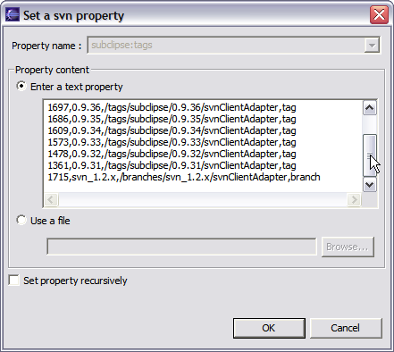
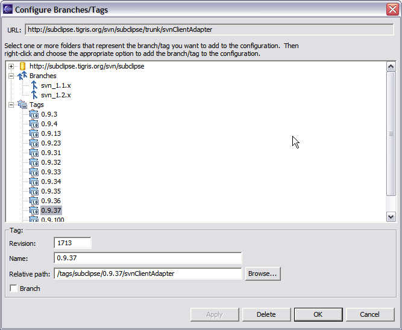
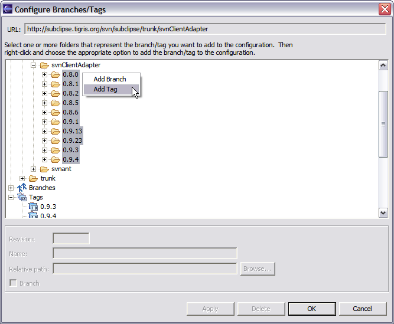
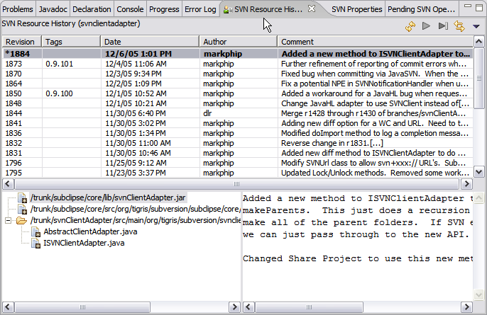
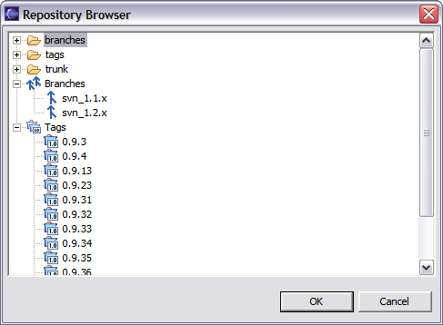
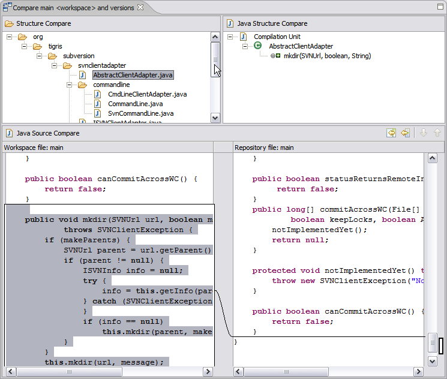

Enhanced Branch/Tag Support
This page shows off some of the enhanced support for branches and tags that was added to Subclipse as of the 0.9.102 release.
Overview
In many ways, the support for branching and tagging in Subversion represents a vast improvement over CVS. It certainly addresses many of the complaints with this feature in CVS. There is one significant drawback in the implementation in Subversion. Namely, the process of creating a branch/tag does not leave behind any "breadcrumbs" in the source of the branch/tag operation to indicate that the branch/tag was created. In other words, there is information in the branch/tag that indicates where it came from, but there is no similar information in the origin of the branch/tag that would let you see or know that the branch tag exists. The net result is that when looking at a file or folder there is no easy way to know which revisions belong to which tags.
Subclipse aims to solve the above problem by allowing you to maintain a Subversion property in your project that indicates the branches/tags that have been created from that project. The name of the property is subclipse:tags. The format is:
revision_number,tag_name,relative_path,branch/tag
The above screenshot shows what the property looks like. However there is a Configure Branches/Tags option on the Team menu that allows you to edit the property using a custom editor.
Besides providing basic editing capabilities, the dialog also includes a built-in repository browser. This allows you to select one or more folders and add them as a branch/tag in one action. When folders are added in this manner, Subclipse automatically fills in the Revision number based on the Last Changed Revision of the selected folder.
Once the property has been defined, there are a number of ways that Subclipse takes advantage of it.
History Browsing
The Resource History View has been enhanced to show the tags for a revision.
A preference controls whether to show this information when browsing history directly from the repository. To show the information we have to search the repository for the presence of the subclipse:tags property. On a slow connection you probably would not want to do this.
Compare Revisions
The Compare with Revision ... option has been enhanced to show tags in its history view. This makes it easy to know which revisions you want to compare.

URL Chooser
The URL Chooser that allows you to pick a URL in many of the Subclipse dialogs has been enhanced to show Branch/Tag information. This allows you to just select a branch/tag and the proper URL to that branch/tag will be automaticlly created.
Compare with Branch/Tag
Subclipse 0.9.100 added a Compare with Branch/Tag option to the menu. In that release the option only produced a Unified Diff file. As of release 0.9.102 you have the option of producing a unified diff, or an Eclipse graphical compare. The Eclipse compare option is fairly slow if you do not have a fast repository connection. Also, the Eclipse compare option will show differences in svn keywords which the unified diff option will not. That being said it is still convenient to have and combined with the enhanced URL Chooser, it is a very nice option.
Updating the Property
In addition to the Configures Branches and Tags option that was discussed earlier, there is also support for automatically updating the subclipse:tags property when you create a Branch/Tag using Subclipse. When you take this option, if we detect the subclipse:tags property on the item you selected, then we pop-up a dialog that lets you confirm that you want to add this new information to the subclipse:tags property. You then just have to commit that property change after creating the Branch/Tag. This feature does not exist when creating the Branch/Tag from the repository browser as it is only possible to modify a property value in a working copy.